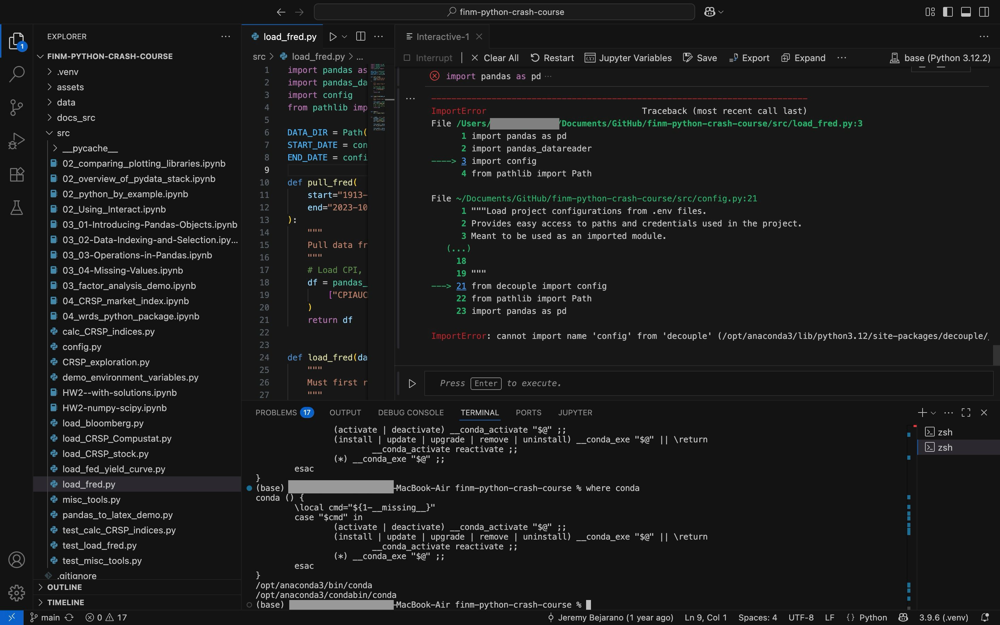

1.4 Common Errors When Setting Up VS Code and Python#
This document contains solutions to frequently encountered errors when setting up VS Code with Python and Jupyter environments.
Error 1: Different Python Environments in Terminal vs Jupyter#
Problem#

Your code works in the terminal but fails in Jupyter (or vice versa) with import errors, even though both claim to use the same environment (e.g., “base”).
What’s happening#
VS Code (and Jupyter) can have multiple Python interpreters installed:
System Python (came with your OS)
Anaconda Python (if you installed Anaconda)
Python.org Python (if you downloaded from python.org)
Virtual environment Python (if you created venvs)
The terminal and Jupyter kernel might be using different Python installations, even if they have the same version number or environment name.
Diagnosing the issue#
Check Python location in Terminal:
which python # or on Windows: where python
Check Python location in Jupyter:
import sys print(sys.executable)
Compare installed packages: In Terminal:
pip list | grep <package_name>
In Jupyter:
!pip list | grep <package_name>
If the paths don’t match, you’re using different Python environments.
Solution#
Option 1: Install Jupyter kernel for your environment#
# Activate your correct environment first
conda activate base # or your env name
# Install ipykernel
pip install ipykernel
# Register the kernel
python -m ipykernel install --user --name myenv --display-name "Python (myenv)"
Then in VS Code/Jupyter, select this kernel from the kernel picker.
Option 2: Use VS Code’s Python selection#
Open Command Palette (Cmd/Ctrl + Shift + P)
Type “Python: Select Interpreter”
Choose the same Python that your terminal uses
Restart Jupyter kernel
Cleaning up duplicate kernels#
List all kernels:
jupyter kernelspec list
Remove unwanted ones:
jupyter kernelspec remove <kernel_name>
Error 2: Wrong decouple Package Installed#
Problem#

You get this error when trying to import decouple:
from decouple import config
# ModuleNotFoundError: No module named 'decouple'
What’s happening#
There are TWO different packages with similar names:
decouple- This is the wrong package (it’s a different library)python-decouple- This is the correct package that we need
If you accidentally installed decouple first, then trying to install python-decouple won’t work properly because pip thinks “decouple” is already installed, even though they’re completely different packages.
Diagnosing the issue#
Check which package is installed:
pip show decouple
pip show python-decouple
If decouple shows up but python-decouple doesn’t, you have the wrong package.
Solution#
Uninstall the wrong package:
pip uninstall decouple -y
Install the correct package:
pip install python-decouple
Verify it worked:
from decouple import config # This should work now
Important note#
Always install python-decouple, not decouple. Despite their similar names, they are completely different packages.